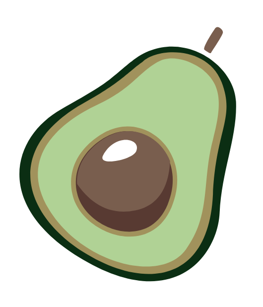

healthy lifestyle
Збалансоване Харчування -
це харчування, при якому
задовольняється добова потреба організму в енергії, а також
підтримується оптимальний баланс мікроелементів і вітамінів. При
збалансованому раціоні організм нормально розвивається, росте і
функціонує.
Білки потрібні для будування та підтримки м’язів, вони беруть участь в утворенні гормонів та антитіл. Добова потреба організму в білках 1-2 грами на 1 кг маси тіла. Містяться в м’ясі, рибі, молочних продуктах, бобових.
Жири виконують функції гормонів, вітамінів і захисних речовин. Вони утворюють запас речовин. Містяться в рослинних оліях, молоці, горіхах, салі та вершковому маслі.
Вуглеводи – органічні сполуки, які беруть участь в утворенні запасу речовин, потрібних організму та є важливим джерелом енергії. Містяться здебільшого в хлібі, картоплі, крупах, фруктах та цукерках.
Вода – розчинник. Бере участь у формуванні внутрішнього середовища організму і допомагає перебігу біохімічних реакцій. Людина на 75% складається з води. Добова норма у споживанні води —1,5-2 літри на добу.
Мінеральні речовини входять до складу кісток та відіграють важливу роль у функціонуванні клітин. Це такі речовини, як: кальцій, ферум і йод. Основним джерелом мінеральних речовин є рослинна їжа.
Вітаміни – це необхідні для нормальної життєдіяльності низькомолекулярні органічні сполуки, синтез яких у організмів даного виду відсутній або обмежений. Є 12 основних видів вітамінів.
Повинно бути три основних прийоми їжі і два перекуси, між якими проходить однаковий час.
Основна порція їжі має бути під час сніданку та обіду. Створіть «правило тарілки».
Мінімально вживайте сіль, цукор, випічку, солодощі, алкоголь та фастфуд.
Добова норма води складає не менше 1,5 л. Найкраще пити за півгодини до їжі.
Надходження і витрата харчових речовин мають бути збалансованими.
Продукти можна готувати на пару, в духовці, запікати, варити і тушкувати, смаження є небажаним.
Щоб забезпечити збалансоване харчування можна рахувати калорії кожного прийому їжі, але якщо це вас втомлює, користуйтеся простим «Правилом тарілки». Суть цього правила в тому, щоб поділити тарілку середнього розміру на умовні 3 частини (50%, 25% та 25%), де 50% становлять овочі та фрукти, а решта поділена порівну між білками і вуглеводами, а якщо точніше, то між цільнозерновими та м’ясними і молочними продуктами.